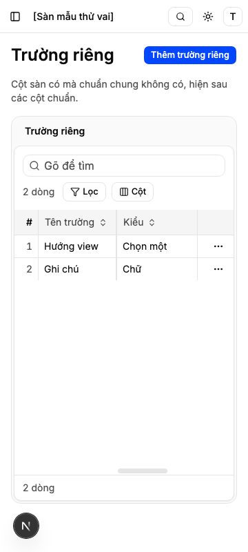
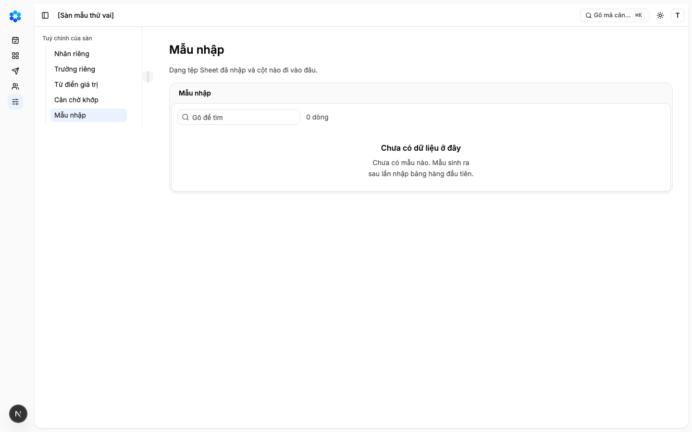
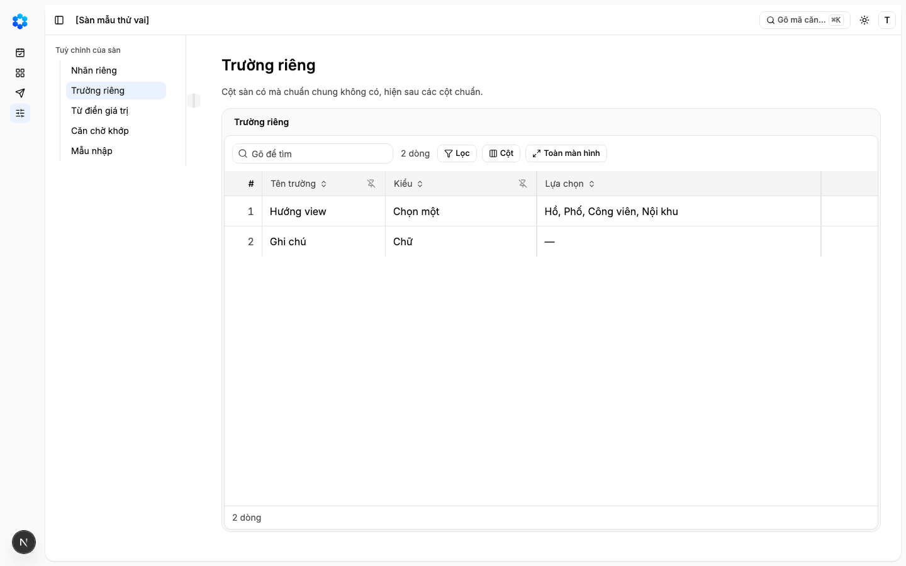
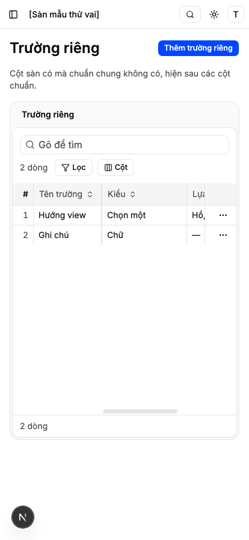
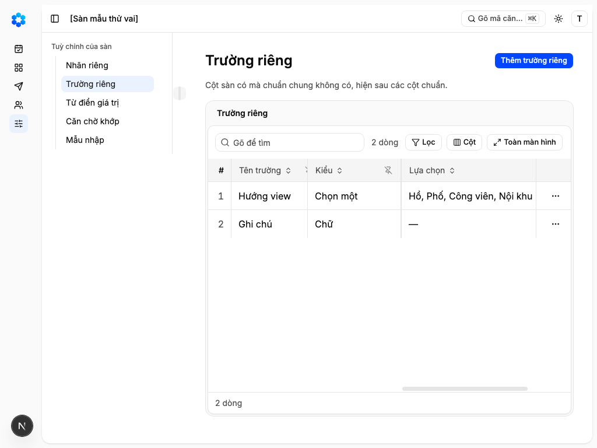
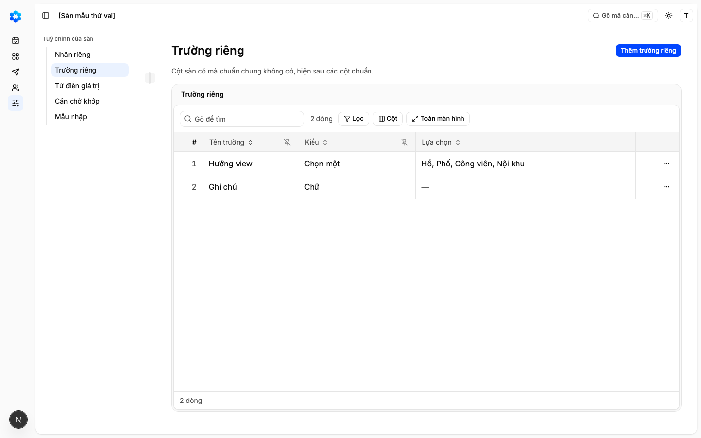
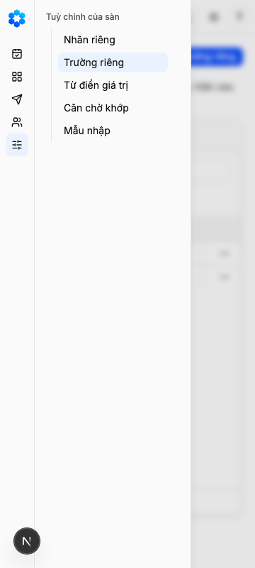
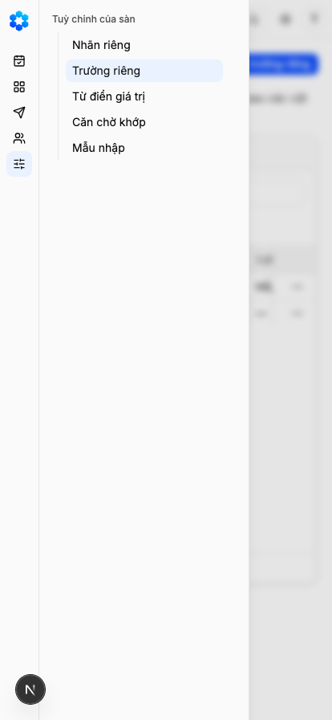
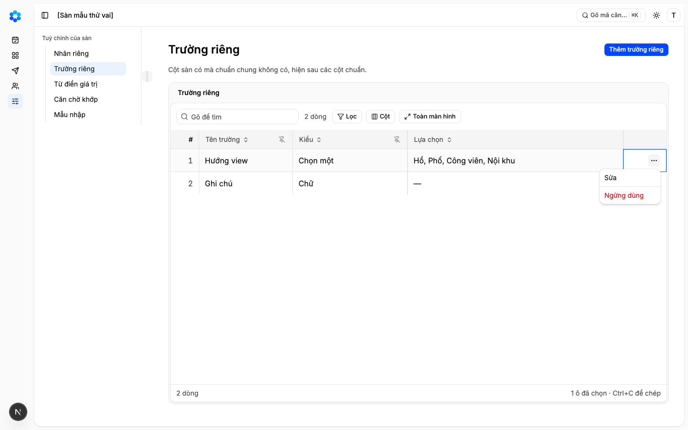
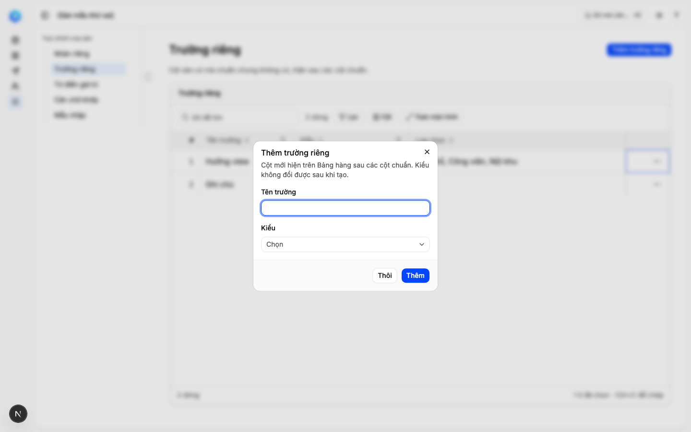

"Mỗi sàn có lớp riêng của mình trên lõi chuẩn — nhãn riêng, trường riêng, từ điển giá trị, căn chờ khớp và mẫu nhập — và Bảng hàng hiện trường riêng, đọc nhãn riêng của sàn"
Vì sao làm
Chủ kho 2026-11-12 ở phiên dãy R: «chuẩn hoá danh mục căn như onehub-invest vì đều gốc là tiêu chuẩn dữ liệu reso, nhưng không cứng mà cho người dùng thêm trường riêng, nhãn riêng, vì người dùng là các công ty môi giới họ hoạt động thường thiếu chuẩn hoá và triển khai nếu không khả năng thay đổi thì thường thất bại» và «MVP sẽ cho người dùng bắt đầu bằng import file google sheet hay excel mà họ đang làm việc quản lý bảng hàng vào […] Khi Import vào thì đây chính là thời điểm mapping giữa sự chuẩn hoá của onehub-inventory và sự không chuẩn của người dùng.» Chủ kho nhận Hỏi-5 ở Cổng Phạm vi hàng 7d cùng ngày: mở hàng này ngay sau 7d, trước khi nối dữ liệu thật; lật phần hoãn L4 và phần nhớ mẫu nhập của L5 (AI vẫn hoãn). Bản đề xuất: _acceptance/danh-muc-can-nhu-onehub-invest/de-xuat-nhap-la-luc-anh-xa.md
Đã hứa
- AC-1 — (cross-layer) Given sàn A, When người có quyền lưu nhãn riêng cho một khái niệm chuẩn qua `/api/v1` (ví dụ «Toà» →
- AC-2 — (cross-layer) Given sàn A, When lưu trường riêng qua `/api/v1`, Then trường nhận đúng năm kiểu (chữ, số, ngày, chọn
- AC-3 — Given một trường riêng của mỗi kiểu, When kiểm một giá trị cho lần chào, Then ma trận viết trước gồm giá trị đúng và
- AC-4 — (cross-layer) Given sàn A, When lưu từ điển giá trị qua `/api/v1` (ví dụ Hướng «ĐN» → Đông Nam, Trạng thái «còn»
- AC-5 — (cross-layer) Given sàn A có căn chờ khớp «SA5-12.08» mà danh mục chưa có căn ấy, When tra mã trong sàn A, Then
- AC-6 — (cross-layer) Given sàn A, When lưu mẫu nhập qua `/api/v1`, Then tìm theo dạng tệp (tên cột đã gấp, đúng thứ tự)
- AC-7 — (cross-layer) Given hai sàn A, B, When đọc và ghi năm bảng của lớp riêng, Then mọi bảng có `company_id`, luật theo
- AC-8 — (cross-layer) Given sàn A có nhãn riêng «Block» cho Toà và hai trường riêng còn dùng (một đã ngừng), When mở Bảng
- AC-9 — (cross-layer) Given sàn A có đủ năm phần, When mở màn «Tuỳ chỉnh của sàn», Then thấy năm phần với đúng dòng của
- AC-11 — (cross-layer) Given người có quyền thêm, sửa, When thêm hay sửa một nhãn riêng, trường riêng hay dòng từ điển bằng
- AC-10 — Given mô hình nghiệp vụ, When so ontology với bảng, kiểu sinh và mã, Then năm thực thể mới có tệp ontology (tên
Thiết kế
docs/superpowers/specs/2026-11-13-lop-rieng-cua-san-design.md
Quyết định
- 2026-11-13 · Máy · approach · S1 — Nạp 3 luật sản phẩm từ PRODUCT-INVARIANTS.mdKho đã khai tệp luật sản phẩm — bước thiết kế đọc nó trước khi chọn.
- 2026-11-13 · Máy · approach · S1 — Đã tra tri thức: Mỗi sàn có lớp riêng của mình trên lõi chuẩn — nhãn riêng, trường riêng, từ điển giá trị, căn chờ khớp và mẫu nhập — và Bảng hàng hiện trường riêng, đọc nhãn riêng của sànKho đã khai tri_thuc — bước thiết kế tra trang trước khi chọn.
- 2026-11-13 · Máy · descope · S1 — Hàng 7e không mở đường ghi vào danh mục chung: căn chờ khớp là dòng của sàn, khớp chỉ ghi khoá căn của danh mục vào dòng ấy; ba kẽ hở cơ sở dữ liệu của danh mục để lại cho hàng 12 Thêm căn hoặc hàng 11.Đề xuất gốc nói căn chờ khớp là căn của sàn có khoá sàn và danh mục chung không được để sàn ghi thẳng; E5 đo danh mục không đổi dòng nào khi khớp.
- 2026-11-13 · Máy · descope · S1 — Giá trị trường riêng trên lần chào chưa lưu ở hàng này: 7e làm hàm kiểm giá trị và thuộc tính trên ontology, Bảng hàng đọc giá trị mẫu; hàng 10 thêm cột lưu trên bảng lần chào thật.Kho chưa có bảng lần chào (Bảng hàng chạy trên dữ liệu mẫu), hàng 10 dựng bảng ấy và đứng sau 7e.
- 2026-11-13 · Máy · descope · S1 — Trạng thái riêng của sàn (phần còn lại của L4) và màn Cài đặt sàn đầy đủ không làm ở hàng này.Câu giao của hàng 7e liệt đúng năm phần và câu Bật khi ghi màn Cài đặt sàn đầy đủ để H4.
- 2026-11-13 · Máy · approach · S1 — Bỏ luồng đề xuất–duyệt của từ điển như Quỹ hàng: người có quyền ghi thẳng một giá trị, hàng 11 là nơi người chốt từng giá trị khi nhập.Đề xuất gốc: máy đề xuất, người chốt ở màn xem trước của lần nhập, không cần lớp duyệt thứ hai.
- 2026-11-13 · Máy · approach · S1 — Kiểu trường riêng là tập đóng năm kiểu (chữ, số, ngày, chọn một, có/không), trần 20 trường còn dùng và 30 lựa chọn giữ ở cả cửa API lẫn cơ sở dữ liệu.Câu Bật khi của hàng khai đúng năm kiểu và hai trần; Quỹ hàng chỉ giữ trần ở mã nên lọt được khi ghi thẳng (E2).
- 2026-11-13 · Máy · approach · S1 — Mô-đun Cấu hình sàn sở hữu năm thực thể mới và dựa vào Danh tính (cửa ghi, withCompany) và Danh mục (tra căn khi khớp); trang quyết định 0029.AGENTS.md: khác biệt của sàn là dữ liệu trong company-config; ghi chỉ qua /api/v1 bằng cửa dùng chung; giám sát cấp 0029 (R-1311-9).
- 2026-11-13 · Máy · approach · S1 — Hỏi-1 · Ai được sửa lớp riêng của sàn: máy khuyên Đầu chủ, Trưởng nhóm, Quản trị sàn (như mã riêng của 7d), Đầu khách chỉ đọc.Người nhập Sheet ở hàng 11 là Đầu chủ, lần nhập ghi vào lớp riêng; Quỹ hàng chỉ cho Quản trị sàn.
- 2026-11-13 · Máy · approach · S1 — Hỏi-2 · Bảng xem lại làm được gì: máy khuyên xem năm phần, đổi chữ nhãn và tên trường, ngừng dùng, khớp căn chờ; thêm mới chỉ qua màn nhập hàng 11.Đề xuất gốc: sửa nhãn, trường, từ điển đi qua màn nhập và một bảng xem lại tối giản; màn Cài đặt đầy đủ là H4.
- 2026-11-13 · Máy · approach · S1 — Hỏi-3 · Dáng màn Tuỳ chỉnh của sàn: máy khuyên A — năm phần là năm mục ở cột thứ hai của App Shell, mỗi phần một vùng Lưới của kho; hai lối khác là khối ReUI settings-4 (các phần xếp dọc một trang) và settings-11 (thẻ tab, mỗi tab một bảng).Kho đã có cột thứ hai (2c) và vùng Lưới (khối trong kho, nấc 1 của quyết định 0023); hai khối ReUI Pro chưa cài và máy chủ ReUI đang lỗi đăng nhập.
- 2026-11-13 · Máy · approach · S1 — Hỏi-4 · Căn chờ khớp vào danh mục lúc nào: máy khuyên khi người bấm Khớp với danh mục ở bảng xem lại và khi hàng 11 áp một lần nhập; không tự ghi ngầm khi mở Bảng hàng.Danh mục chỉ do hệ thống nạp, chưa có lúc nạp để móc vào; ghi khi đọc thì khó lần ai đổi gì.
- 2026-11-13 · Máy · approach · S1 — Hỏi-5 · Tên người dùng thấy cho màn và mục thanh bên: máy khuyên «Tuỳ chỉnh của sàn»; năm phần gọi Nhãn riêng, Trường riêng, Từ điển giá trị, Căn chờ khớp, Mẫu nhập.Chữ người dùng thấy phải vào ontology/labels.yaml; «lớp riêng» là chữ nội bộ của kho.
- 2026-11-13 · Máy · approach · S1 — Hỏi-6 · Trạng thái riêng của sàn (phần còn lại của L4): máy khuyên để một hàng sau, không làm trong 7e; sàn nhập Sheet có trạng thái lạ thì ghép qua từ điển vào trạng thái chuẩn.Câu giao của 7e liệt năm phần không có trạng thái; dòng sửa đổi L4 ngày 2026-11-12 chỉ nói L4 không còn hoãn nguyên khối, không quyết trạng thái riêng (phản biện chỉ ra căn cứ cũ không quyết).
- 2026-11-13 · Máy · approach · S1 — Tên trường riêng không trùng với tên cột khác của Bảng hàng; ngừng một trường thì từ điển của nó thôi tra ra và mẫu nhập đánh dấu cột trỏ nó là đích đã ngừng.Phản biện context sạch: hai cột cùng tên làm hàng 11 ghép nhầm, và mẫu cũ ghi vào trường đã ngừng làm mất ô.
- 2026-11-13 · Máy · approach · S1 — Tên trường riêng không trùng với tên cột khác của Bảng hàng; ngừng một trường thì từ điển của nó thôi tra ra và mẫu nhập đánh dấu cột trỏ nó là đích đã ngừng.Phản biện context sạch: hai cột cùng tên làm hàng 11 ghép nhầm, và mẫu cũ ghi vào trường đã ngừng làm mất ô.
- 2026-11-13 · Máy · approach · S1 — Hỏi-3 (đặt lại sau rà soát cổng) · Năm phần của màn Tuỳ chỉnh của sàn là năm bảng riêng, hay một trang danh sách gọn thấy hết sàn đã chỉnh gì: máy khuyên A — năm phần ở cột thứ hai của App Shell, phần đang mở là một bảng Lưới lọc và sắp được; lối khác B — một trang xếp nhóm theo hình khối ReUI settings-4, mỗi phần năm dòng đầu.Căn chờ khớp sau lần nhập đầu có thể hàng trăm căn (đề xuất gốc: gần hết căn của sàn thật chưa có trong danh mục), nên mỗi phần cần lọc và sắp như Bảng hàng; B thấy hết năm phần một lần nhưng phần dài phải sang danh sách khác.
- 2026-11-13 · Máy · approach · S1 — Hỏi-2 · Bảng xem lại làm được gì: máy khuyên xem năm phần, đổi chữ nhãn và tên trường, ngừng dùng, khớp căn chờ; thêm mới chỉ qua màn nhập hàng 11.Đề xuất gốc: sửa nhãn, trường, từ điển đi qua màn nhập và một bảng xem lại tối giản; màn Cài đặt đầy đủ là H4. (ghi lại: dòng d-20261113T110224Z-17 lỡ trỏ thay nhầm câu này.)
- 2026-11-13 · Máy · approach · S1 — Hỏi-3 (đặt lại sau rà soát cổng) · Năm phần của màn Tuỳ chỉnh của sàn là năm bảng riêng, hay một trang danh sách gọn thấy hết sàn đã chỉnh gì: máy khuyên A — năm phần ở cột thứ hai của App Shell, phần đang mở là một bảng Lưới lọc và sắp được; lối khác B — một trang xếp nhóm theo hình khối ReUI settings-4, mỗi phần năm dòng đầu.Căn chờ khớp sau lần nhập đầu có thể hàng trăm căn (đề xuất gốc: gần hết căn của sàn thật chưa có trong danh mục), nên mỗi phần cần lọc và sắp như Bảng hàng; B thấy hết năm phần một lần nhưng phần dài phải sang danh sách khác.
- 2026-11-13 · Máy · approach · S1 — Hỏi-3 (đặt lại sau rà soát cổng) · Năm phần của màn Tuỳ chỉnh của sàn là năm bảng riêng, hay một trang danh sách gọn: máy khuyên A — năm phần ở cột thứ hai của App Shell, phần đang mở là một bảng Lưới lọc và sắp được; lối khác B — một trang xếp nhóm theo hình khối ReUI settings-4, mỗi phần ba dòng đầu, cuộn một trang là thấy cả năm phần.Căn chờ khớp sau lần nhập đầu có thể hàng trăm căn (đề xuất gốc: gần hết căn của sàn thật chưa có trong danh mục), nên mỗi phần cần lọc và sắp như Bảng hàng; B thấy được cả năm phần trong một trang nhưng phần dài phải sang danh sách khác.
- 2026-11-13 · Người (Manh Phan) · approach · gate1 — Màn Tuỳ chỉnh của sàn có đủ bộ nút theo khuôn 9e: Thêm, Sửa, Ngừng dùng ở Nhãn riêng, Trường riêng, Từ điển; Khớp và Ngừng dùng ở Căn chờ khớp; Đổi tên và Ngừng dùng ở Mẫu nhập; không có Xoá; trường riêng không đổi kiểu sau khi tạo.người chọn ở Cổng Phạm vi: «Tôi thấy thiếu bộ nút crud như các kiến trúc chung?» — giám sát xác nhận đổi Hỏi-2 sang lối khác theo bảng R đề xuất (G-1311-73).
- 2026-11-13 · Máy · approach · S1 — Hỏi-7 · Phần Căn chờ khớp có nút thêm căn bằng tay không: máy khuyên không — căn chờ khớp sinh ra khi nhập Sheet; tạo căn tay khi danh mục chưa có là việc của hàng 12 Thêm căn.Câu giao của hàng 12: «Đầu chủ gõ mã căn để thêm căn, hoặc tạo căn tay khi danh mục chưa có».
- 2026-11-13 · Máy · approach · S1 — giữ cỡ — 11 tiêu chí: tiêu chí thứ 11 (thêm, sửa trên màn) là phần chủ kho yêu cầu thêm vào chính màn Tuỳ chỉnh của sàn, tách ra thì màn ra mắt thiếu nút.AC-11 dùng chung luật của AC-1, AC-2, AC-4 và màn của AC-9; chủ kho chốt đủ bộ nút ở Cổng Phạm vi.
- 2026-11-13 · Người (Manh Phan) · approach · gate1 — Chủ kho duyệt Cổng Phạm vi theo khuyến nghị cả sáu câu: Hỏi-1 Đầu chủ, Trưởng nhóm, Quản trị sàn sửa, Đầu khách chỉ xem; Hỏi-3 lối A năm bảng riêng ở cột thứ hai; Hỏi-4 khớp khi người bấm và khi nhập; Hỏi-5 «Tuỳ chỉnh của sàn»; Hỏi-6 trạng thái riêng để hàng sau; Hỏi-7 không thêm căn chờ bằng tay.người chọn ở Cổng Phạm vi: «/acceptance-gate:approve lop-rieng-cua-san duyệt»
- 2026-11-13 · Người · seal · gate1 —
- 2026-11-13 · Máy · approach · S2 — Bộ sinh ontology thêm kiểu thuộc tính json để lần chào và trường riêng mang giá trị dạng đối tượng, thay vì lưu chữ JSON trong cột chữ.tools/ontology_codegen.py chỉ có kiểu chữ, số, ngày, có/không, khoá; ADR-0018 quyết định 8 của Quỹ hàng: giá trị trường riêng là jsonb trên lần chào.
- 2026-11-13 · Người (Manh Phan) · approach · gate1.5 — Chủ kho duyệt kế hoạch dựng 8 việc, kèm phép sửa công cụ sinh mã từ mô hình nghiệp vụ để thêm kiểu đối tượng (chỉ đúng chỗ ấy trong tools/).người chọn ở duyệt kế hoạch: «duyệt kế hoạch»
- 2026-11-13 · Máy · fix · S3 — Sửa sau Cổng Phạm vi, không đổi lời tiêu chí: thêm khối Vai × Màn vào hợp đồng (chép bảng vai × nút đã duyệt), khai màn tuy-chinh-san là dự kiến trong sổ màn, gỡ bản mẫu và mục thanh bên tạm; nhãn «Đổi tên mẫu» thay «Đổi tên» (trùng nhãn góc nhìn) và «Thêm cách viết» thay «Thêm từ điển» (giám sát G-1311-100: nút thêm một cặp, không thêm cả cuốn từ điển).Bộ kiểm sổ màn và bộ kiểm chữ đỏ khi hợp đồng có màn mà thiếu khối Vai × Màn, khi bảng nhãn có hai nhãn trùng, và khi bản mẫu viết chữ cứng trong src/.
- 2026-11-13 · Máy · fix · S3 — Nhãn riêng nhận đúng tám khái niệm đang làm tiêu đề cột Bảng hàng (thay cho «mọi khái niệm trường hay thực thể»); từ điển ghép được vào trạng thái, lý do ngừng và tám hướng tiếng Việt của danh mục, cùng trường riêng chọn một.Bảng nhãn sinh ra không mang loại khái niệm và công cụ sinh chỉ được sửa đúng chỗ kiểu đối tượng; Hướng trong danh mục 7d là chữ tiếng Việt, không phải tập đóng trong mô hình.
- 2026-11-14 · Máy · fix · S3 — Màn Tuỳ chỉnh của sàn đọc tên năm phần từ tệp lời chung, không từ tệp chỉ chạy trong trình duyệt; thêm nhãn «Hướng» (DirectionFaces) để từ điển giá trị gọi tên trường hướng; giá trị mẫu của trường riêng đặt cạnh mẫu hàng 1, không đổi mẫu đã ghim.Thanh bên đọc tên phần từ tệp chạy trong trình duyệt nên máy chủ trả lỗi mọi trang (bài tests/e2e-db/lop-rieng.spec.ts không mở được); tests/language.test.ts cấm viết cứng tên trường; tests/sample-data.test.ts ghim mã của mẫu hàng 1.
- 2026-11-14 · Máy · fix · S4-r1 — Trước lượt chấm đầu: E14 trỏ đúng chỗ khai lệnh của cổng chứng minh màn (cùng lệnh, khác nhóm), E11 và E13 có bước chạy để máy chấm tự chụp ảnh màn trên dữ liệu thật đã đăng nhập; tiêu chí và điều kỳ vọng giữ nguyên.s4-args.mjs từ chối sinh tham số: ref config:executors.script.proof_gate không có (lệnh nằm ở executors.test.proof_gate) và hai eval ui-check thiếu trường steps; ảnh cần phiên đăng nhập nên chụp bằng ca proof images của tests/e2e-db/lop-rieng.spec.ts.
- 2026-11-14 · Máy · fix · S4-r1 — Sửa sau lượt chấm 1 (REJECT), chỉ phần trong hợp đồng: ca cách ly kiểm cả năm bảng không ghi hộ sàn khác và không xoá được (AC-7); bài khớp căn chờ so đúng mã căn của danh mục và căn mã trùng hai dự án vẫn chờ (AC-5); bốn lỗi của hộp ghim đúng câu dưới ô (AC-11); ảnh điện thoại mở ngăn trượt có năm phần (E13); tệp cấu hình cục bộ chưa commit đã hoàn lại để make check không đỏ vì nó (E15). Các mục ngoài hợp đồng giữ nguyên cho Cổng Bằng chứng.evidence-report.md lượt 1: E15 dừng ở prettier vì .claude/launch.json; E13 không thấy năm phần ở 360 và 414; rejectFindings nêu db/tests/cach-ly.sql, tests/db/lop-rieng.db.test.ts, tests/e2e-db/lop-rieng.spec.ts.
Bằng chứng
Các eval
| Eval | Tiêu chí | Loại | Verdict | run_id | verified_at |
|---|---|---|---|---|---|
| E1 | AC-1 | script | PASS | minted-lop-rieng-cua-san-E1-r2 | 2026-11-14T01:50:16Z |
| E2 | AC-2 | script | PASS | minted-lop-rieng-cua-san-E2-r2 | 2026-11-14T01:50:16Z |
| E3 | AC-3 | test | PASS | minted-lop-rieng-cua-san-E3-r1 | 2026-11-14T01:19:59Z |
| E4 | AC-4 | script | PASS | minted-lop-rieng-cua-san-E4-r2 | 2026-11-14T01:50:16Z |
| E5 | AC-5 | script | PASS | minted-lop-rieng-cua-san-E5-r2 | 2026-11-14T01:50:16Z |
| E6 | AC-6 | script | PASS | minted-lop-rieng-cua-san-E6-r2 | 2026-11-14T01:50:16Z |
| E7 | AC-7 | script | PASS | minted-lop-rieng-cua-san-E7-r2 | 2026-11-14T01:50:16Z |
| E8 | AC-7 | script | PASS | minted-lop-rieng-cua-san-E8-r2 | 2026-11-14T01:50:16Z |
| E9 | AC-8 | script | PASS | minted-lop-rieng-cua-san-E9-r2 | 2026-11-14T01:50:16Z |
| E10 | AC-8 | test | PASS | minted-lop-rieng-cua-san-E10-r1 | 2026-11-14T01:19:59Z |
| E11 | AC-8 | ui-check | PASS | minted-lop-rieng-cua-san-E11-r1 | 2026-11-14T01:19:59Z |
| E12 | AC-9 | script | PASS | minted-lop-rieng-cua-san-E12-r2 | 2026-11-14T01:50:16Z |
| E13 | AC-9 | ui-check | PASS | minted-lop-rieng-cua-san-E13-r2 | 2026-11-14T01:50:16Z |
| E14 | AC-9 | script | PASS | minted-lop-rieng-cua-san-E14-r1 | 2026-11-14T01:19:59Z |
| E15 | AC-10 | script | PASS | minted-lop-rieng-cua-san-E15-r2 | 2026-11-14T01:50:16Z |
| E16 | AC-10 | test | PASS | minted-lop-rieng-cua-san-E16-r1 | 2026-11-14T01:19:59Z |
| E17 | AC-8 | script | PASS | minted-lop-rieng-cua-san-E17-r1 | 2026-11-14T01:19:59Z |
| E18 | AC-9 | script | PASS | minted-lop-rieng-cua-san-E18-r1 | 2026-11-14T01:19:59Z |
| E19 | AC-11 | script | PASS | minted-lop-rieng-cua-san-E19-r2 | 2026-11-14T01:50:16Z |
Chi tiết từng eval
PASS E1 · script
AC-1: (cross-layer) Given sàn A, When người có quyền lưu nhãn riêng cho một khái niệm chuẩn qua `/api/v1` (ví dụ «Toà» →
DB_LANE=${DB_LANE:-r} DB_PORT=${DB_PORT:-5565} npx vitest run -c vitest.db.config.ts tests/db/lop-rieng.db.test.ts --reporter=verbose
lệnh chạy xong, không có ca đỏ
PASS E2 · script
AC-2: (cross-layer) Given sàn A, When lưu trường riêng qua `/api/v1`, Then trường nhận đúng năm kiểu (chữ, số, ngày, chọn
cùng lệnh vitest tests/db/lop-rieng.db.test.ts (khối fields), lệnh chạy xong, không có ca đỏ
PASS E3 · test
AC-3: Given một trường riêng của mỗi kiểu, When kiểm một giá trị cho lần chào, Then ma trận viết trước gồm giá trị đúng và
carry-forward tu round 1 — delta khong cham paths cua eval
PASS E4 · script
AC-4: (cross-layer) Given sàn A, When lưu từ điển giá trị qua `/api/v1` (ví dụ Hướng «ĐN» → Đông Nam, Trạng thái «còn»
cùng lệnh vitest tests/db/lop-rieng.db.test.ts (khối value aliases), lệnh chạy xong, không có ca đỏ
PASS E5 · script
AC-5: (cross-layer) Given sàn A có căn chờ khớp «SA5-12.08» mà danh mục chưa có căn ấy, When tra mã trong sàn A, Then
cùng lệnh vitest tests/db/lop-rieng.db.test.ts (khối pending units), lệnh chạy xong, không có ca đỏ
PASS E6 · script
AC-6: (cross-layer) Given sàn A, When lưu mẫu nhập qua `/api/v1`, Then tìm theo dạng tệp (tên cột đã gấp, đúng thứ tự)
cùng lệnh vitest tests/db/lop-rieng.db.test.ts (khối import templates), lệnh chạy xong, không có ca đỏ
PASS E7 · script
AC-7: (cross-layer) Given hai sàn A, B, When đọc và ghi năm bảng của lớp riêng, Then mọi bảng có `company_id`, luật theo
cach-ly: 36 ca đạt, vai quy_hang_app, nối bằng quy_hang_login
PASS E8 · script
AC-7: (cross-layer) Given hai sàn A, B, When đọc và ghi năm bảng của lớp riêng, Then mọi bảng có `company_id`, luật theo
cùng lệnh vitest tests/db/lop-rieng.db.test.ts (khối permissions), lệnh chạy xong, không có ca đỏ
PASS E9 · script
AC-8: (cross-layer) Given sàn A có nhãn riêng «Block» cho Toà và hai trường riêng còn dùng (một đã ngừng), When mở Bảng
3 passed (1.6m)
PASS E10 · test
AC-8: (cross-layer) Given sàn A có nhãn riêng «Block» cho Toà và hai trường riêng còn dùng (một đã ngừng), When mở Bảng
carry-forward tu round 1 — delta khong cham paths cua eval
PASS E11 · ui-check
AC-8: (cross-layer) Given sàn A có nhãn riêng «Block» cho Toà và hai trường riêng còn dùng (một đã ngừng), When mở Bảng
carry-forward tu round 1 — delta khong cham paths cua eval
PASS E12 · script
AC-9: (cross-layer) Given sàn A có đủ năm phần, When mở màn «Tuỳ chỉnh của sàn», Then thấy năm phần với đúng dòng của
3 passed (1.6m)
PASS E13 · ui-check
AC-9: (cross-layer) Given sàn A có đủ năm phần, When mở màn «Tuỳ chỉnh của sàn», Then thấy năm phần với đúng dòng của












PASS E14 · script
AC-9: (cross-layer) Given sàn A có đủ năm phần, When mở màn «Tuỳ chỉnh của sàn», Then thấy năm phần với đúng dòng của
carry-forward tu round 1 — delta khong cham paths cua eval
PASS E15 · script
AC-10: Given mô hình nghiệp vụ, When so ontology với bảng, kiểu sinh và mã, Then năm thực thể mới có tệp ontology (tên
CODEOWNERS matches governance/autonomy.yaml
PASS E16 · test
AC-10: Given mô hình nghiệp vụ, When so ontology với bảng, kiểu sinh và mã, Then năm thực thể mới có tệp ontology (tên
carry-forward tu round 1 — delta khong cham paths cua eval
PASS E17 · script
AC-8: (cross-layer) Given sàn A có nhãn riêng «Block» cho Toà và hai trường riêng còn dùng (một đã ngừng), When mở Bảng
carry-forward tu round 1 — delta khong cham paths cua eval
PASS E18 · script
AC-9: (cross-layer) Given sàn A có đủ năm phần, When mở màn «Tuỳ chỉnh của sàn», Then thấy năm phần với đúng dòng của
carry-forward tu round 1 — delta khong cham paths cua eval
PASS E19 · script
AC-11: (cross-layer) Given người có quyền thêm, sửa, When thêm hay sửa một nhãn riêng, trường riêng hay dòng từ điển bằng
3 passed (1.6m)
Eval không phân biệt (Analyst)
Vòng verify
- Round 1: E13 (kiểm giao diện màn Tuỳ chỉnh của sàn) không đạt — trả về cho bước sửa, commit 26ff867 (cách ly năm bảng, khoá đơn vị khớp, câu từ chối, ảnh điện thoại).
- Round 2: E1, E2, E4, E5, E6, E7, E8, E9, E12, E13, E15, E19 chạy lại và đạt; E3, E10, E11, E14, E16, E17, E18 mang từ round 1; lệnh build và e2e xanh. Verdict PASS.
Tài nguyên
| Khối | Tác tử | Token đầu ra |
|---|---|---|
| S4 round 1 | 22 | 80.377 |
| S4 round 2 | 14 | 42.438 |
2 lượt chấm · tổng 122.815 token
Giới hạn và ngoài hợp đồng
- Cột giá trị trường riêng trên bảng lần chào thật, ghi giá trị khi sửa ô: hàng 10 (7e để lại hàm kiểm của AC-3).
- Ghép năm chỗ khi nhập, bốn dấu mỗi ô, luật «không ô nào mất», hoàn tác lần nhập: hàng 11 (7e để lại tra bốn nguồn, cửa ghi, tìm mẫu theo dạng tệp, ngừng dùng để gỡ phần vừa học).
- Ghi vào danh mục chung và ba kẽ hở cơ sở dữ liệu của danh mục (căn thiếu phân khu dù toà thuộc phân khu; khoá ngoại ghép không chặn việc ấy; mã gốc trỏ đối tượng không có thật): hàng 12 «Thêm căn», hay hàng 11 nếu nhập ghi danh mục. Hàng này không mở đường ghi danh mục.
- Màn Cài đặt sàn đầy đủ (H4), nhật ký đổi cấu hình (N10), nhập có AI (H5).
- Luồng đề xuất–duyệt của từ điển như Quỹ hàng.
- Trạng thái riêng của sàn: theo Hỏi-6 (máy khuyên để hàng sau; câu giao của 7e liệt năm phần, không có trạng thái).
Giao
chưa ghi quan sát production
Giá trị
- Câu hỏi phép đo trả lời: [đề xuất] đã đạt «Sàn lưu và đọc được nhãn riêng của trường chuẩn, trường riêng (chữ, số, ngày, chọn một, có/không; trần 20 trường, 30 lựa chọn), từ điển giá trị, căn chờ khớp và mẫu nhập; mọi bảng của lớp này có khoá sàn và qua bộ kiểm cách ly, sàn khác không thấy; Bảng hàng hiện trường riêng sau cột chuẩn và hiện nhãn riêng thay nhãn chuẩn; căn chờ khớp dùng được ngay và khớp vào danh mục chung khi danh mục có căn ấy mà sàn không phải nhập lại; có một bảng xem lại tối giản cho lớp riêng; trong rào ADR-0018: không đối tượng tự tạo, không công thức, không bộ máy luật; màn Cài đặt sàn đầy đủ để H4» chưa? — chưa đo
- Kết quả nào là SỐNG: [đề xuất] Sàn lưu và đọc được nhãn riêng của trường chuẩn, trường riêng (chữ, số, ngày, chọn một, có/không; trần 20 trường, 30 lựa chọn), từ điển giá trị, căn chờ khớp và mẫu nhập; mọi bảng của lớp này có khoá sàn và qua bộ kiểm cách ly, sàn khác không thấy; Bảng hàng hiện trường riêng sau cột chuẩn và hiện nhãn riêng thay nhãn chuẩn; căn chờ khớp dùng được ngay và khớp vào danh mục chung khi danh mục có căn ấy mà sàn không phải nhập lại; có một bảng xem lại tối giản cho lớp riêng; trong rào ADR-0018: không đối tượng tự tạo, không công thức, không bộ máy luật; màn Cài đặt sàn đầy đủ để H4 — chưa đo
- Kết quả nào là CHẾT: [đề xuất] chưa đạt «Sàn lưu và đọc được nhãn riêng của trường chuẩn, trường riêng (chữ, số, ngày, chọn một, có/không; trần 20 trường, 30 lựa chọn), từ điển giá trị, căn chờ khớp và mẫu nhập; mọi bảng của lớp này có khoá sàn và qua bộ kiểm cách ly, sàn khác không thấy; Bảng hàng hiện trường riêng sau cột chuẩn và hiện nhãn riêng thay nhãn chuẩn; căn chờ khớp dùng được ngay và khớp vào danh mục chung khi danh mục có căn ấy mà sàn không phải nhập lại; có một bảng xem lại tối giản cho lớp riêng; trong rào ADR-0018: không đối tượng tự tạo, không công thức, không bộ máy luật; màn Cài đặt sàn đầy đủ để H4» khi hết timebox — chưa đo
- Timebox: … — chưa đo